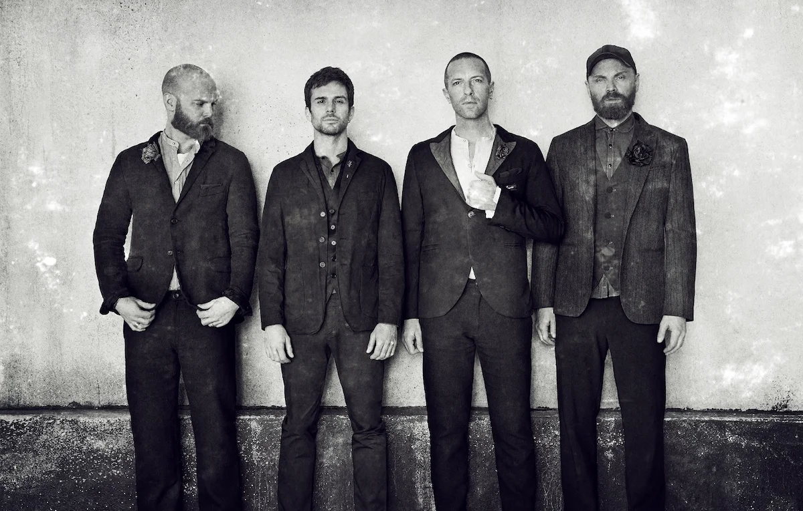
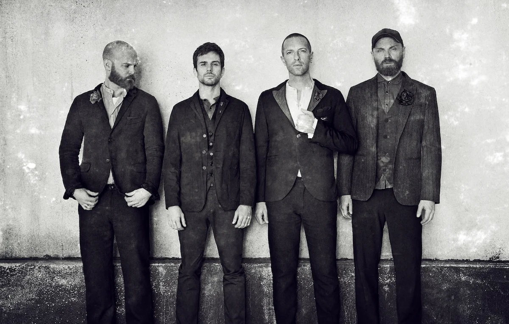

THE BAND

Coldplay are a British rock band formed in London in 1997. They consist of vocalist and pianist Chris Martin, guitarist Jonny Buckland, bassist Guy Berryma and drummer and percussionist Will Champion. The manager is Phil Harvey. Known for their live performances, they have had a significant impact on popular culture through their music, advocacy and achievements.
The members of the band initially met at University College London, calling themselves Big Fat Noises and changing to Starfish before the final name. After releasing the extended play Safety (1998) independently, they signed with Parlophone in 1999 and issued their debut album, Parachutes (2000), featuring the breakthrough single "Yellow". It earned a Brit Award for British Album of the Year and a Grammy Award for Best Alternative Music Album. The group's follow-up, A Rush of Blood to the Head (2002), won the same accolades. X&Y (2005) completed what they considered a trilogy. Its successor, Viva la Vida or Death and All His Friends (2008), received a Grammy Award for Best Rock Album. Both records topped the charts in more than 30 countries and became the best-sellers of their respective years globally. Viva la Vida's title track was also the first song by British musicians to reach number one in the United States and United Kingdom simultaneously in the 21st century.
Coldplay further expanded their repertoire in subsequent albums, with Mylo Xyloto (2011), Ghost Stories (2014), A Head Full of Dreams (2015), Everyday Life (2019), Music of the Spheres (2021) and Moon Music (2024) drawing from genres like electronica, R&B, ambient, disco, funk, gospel, blues and progressive rock. The group's additional endeavours include philanthropy, politics and activism, supporting numerous humanitarian projects and donating 10% of their profits to charity. In 2018, a career-spanning film directed by Mat Whitecross was released for their 20th anniversary.
With over 160 million records sold worldwide, Coldplay are one of the best-selling music acts of all time. They are also the first group in Spotify history to reach 90 million monthly listeners. Fuse listed them among the most awarded artists, which includes holding the record for most Brit Awards won by a band. In the United Kingdom, they have three of the 50 best-selling albums, the most UK Albums Chart number ones without missing the top (10), and the distinction of most played group of the 21st century on British media. In 2021, "My Universe" was the first song by a British group to debut atop the Billboard Hot 100. Coldplay have two of the highest-grossing tours of all time and the most-attended. The British Phonographic Industry called them one of the most "influential and pioneering acts" in the world, while the Rock and Roll Hall of Fame added A Rush of Blood to the Head to the 200 Definitive Albums list and "Yellow" to the Songs That Shaped Rock and Roll exhibit. In 2023, the group were featured on the first Time 100 Climate ranking. Despite their popularity, they are considered polarising cultural icons.
 
